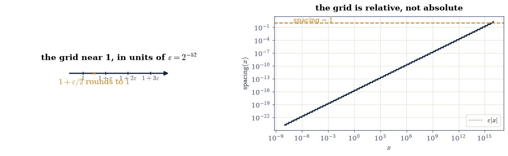
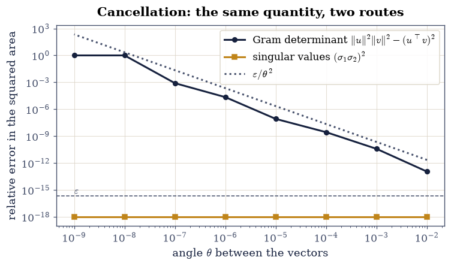
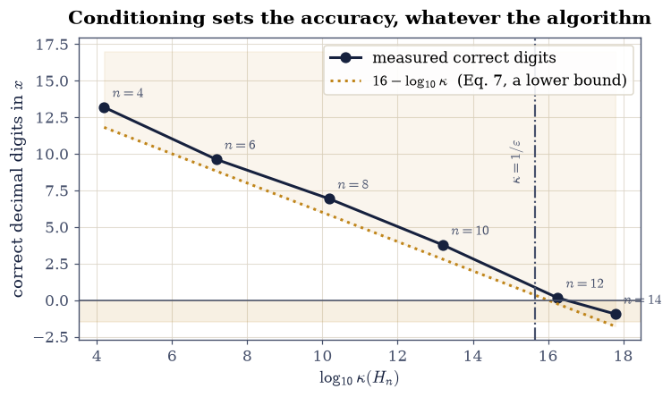

0.2 Floating-Point Reality and the Tolerance Habit#
Notebook overview#
The Prologue ended with a matrix whose rank was three, four, or a matter of
opinion depending on a tolerance nobody had chosen. This notebook is where that
tolerance comes from, and it is the most load-bearing hour in the course:
every one of the several hundred checks in the remaining forty-five notebooks
compares two floating-point numbers, and none of them can use ==.
The reason is not that floating-point arithmetic is unreliable. It is extremely reliable, and it is specified: IEEE 754 guarantees that each individual operation returns the correctly rounded exact result, with a relative error of at most one unit roundoff \(\varepsilon/2\). What it cannot do is remember what you meant. Two mathematically identical expressions can round differently at every step, and after a long computation the accumulated differences are what a check must be able to tolerate without either passing a genuine bug or failing on a valid answer.
So we do four things. We find \(\varepsilon\) experimentally rather than looking it up (Exercises 1–2), we meet the two ways digits actually disappear — cancellation when nearly equal quantities are subtracted (Exercise 3) and accumulation when many roundings pile up (Exercise 4) — and then we meet the thing that is nobody’s fault: conditioning, the amplification a problem applies to any perturbation whatsoever, including the one your input arrived with (Exercise 5). Exercise 6 answers the Prologue’s rank question, and Exercise 7 states the tolerance policy this course follows.
Throughout, SymPy runs alongside NumPy as ground truth. Solving a system over
the rationals is exact, and comparing it against the same system in float64
is how we measure error rather than estimate it. That pairing is a spine of the
whole course.
How to read a check. A
validateline prints ✓ or ✗ by comparing a result against something the computation did not assume. A ✗ means the output did not match what the check expected — which may be a genuine error, a valid convention difference, or a tolerance set too tight. Investigate; do not conclude. After this notebook you will be able to tell which of the three you are looking at, which is rather the point of it.
Theory in brief#
What a float is, and how far apart they are#
A float64 stores a sign, an 11-bit exponent, and a 52-bit fraction, so the
representable numbers are
which is a grid that is uniform within each power-of-two interval and doubles in spacing at each one. Between 1 and 2 the spacing is \(2^{-52}\); between 2 and 4 it is \(2^{-51}\); and so on. That spacing at 1 is the machine epsilon,
the smallest number with \(1 + \varepsilon \neq 1\). Because the grid is relative, the right way to compare two floats is relative too: absolute gaps mean nothing without knowing the scale of the numbers involved.
IEEE 754 guarantees that for each of \(+,-,\times,/\) the computed result is the exactly rounded true result, so
Each operation is therefore nearly perfect. Trouble comes from sequences of them, in exactly two ways.
Cancellation: subtraction reveals the error already present#
If \(a\) and \(b\) agree to \(k\) leading digits, \(a - b\) is computed exactly (this is Sterbenz’s lemma, and it is why cancellation is so misunderstood) — but the result has only the digits that differed, so the relative error that was hiding in the last bits of \(a\) and \(b\) is promoted to the leading bits of the answer. Nothing was lost in the subtraction; the subtraction merely stopped hiding what the earlier roundings cost.
Accumulation: many small errors add up#
Summing \(N\) numbers left to right, the model Eq. 20 gives a worst
case growing like \(N\varepsilon\), and for random rounding a typical case like
\(\sqrt{N}\varepsilon\). NumPy’s np.sum does not sum left to right: it uses
pairwise summation, splitting the array recursively, which reduces the
worst case to \(\log_2(N)\,\varepsilon\). math.fsum does better still and is
exact, at a cost.
Conditioning: the part that is nobody’s fault#
Consider solving \(A\mathbf{x} = \mathbf{b}\). Perturb \(\mathbf{b}\) slightly. The exact solution of the perturbed system differs from the exact solution of the original by a factor that depends only on \(A\):
The condition number \(\kappa\) is a property of the problem, not of any algorithm. Since the input arrives already rounded to relative accuracy \(\varepsilon\), even a perfect solver returns an answer with relative error up to \(\kappa \varepsilon\): as a rule of thumb, you lose \(\log_{10}\kappa\) decimal digits and there is nothing to be done about it. The rest of Chapter V is about what a good algorithm promises instead, and §5.1 makes it precise.
Setup#
Data and instruments only: machine constants and a digits meter. The left-to-right summation loop this notebook studies is built in Exercise 4, where its behaviour is the lesson.
The Setup below holds this notebook’s data and instruments — nothing you are asked to build. It is collapsed so the building stays yours; expand it whenever you want the details.
Exercise 1: Find machine epsilon, and see the grid#
The constant \(\varepsilon\) of Eq. 19 is available as
np.finfo(float).eps, but looking it up teaches nothing. Its definition is
operational — the smallest \(\varepsilon\) with \(1 + \varepsilon \neq 1\) in
floating point — and that definition is a bisection you can run.
Start at \(\varepsilon = 1\) and halve it as long as \(1 + \varepsilon/2\) still differs from 1. The loop stops exactly when halving once more would fall off the grid, so the final value is the grid spacing at 1, which Eq. 18 predicts is \(2^{-52}\).
The second half of the exercise is the fact that makes relative tolerances the
only sensible kind. The spacing is not constant. np.spacing(x) returns the
distance from x to the next representable float, and by
Eq. 18 it satisfies \(\texttt{spacing}(x) \approx
\varepsilon |x|\), doubling at every power of two. Near \(1\) it is
\(2.2\times10^{-16}\); near \(10^{6}\) it is \(10^{-10}\); near \(10^{16}\) it exceeds
1, so at that scale consecutive integers are no longer distinguishable.
Part a) Find \(\varepsilon\) by the bisection above and check it against both
2.0**-52 and np.finfo(float).eps, exactly.
Write this one yourself — the implementation is the lesson.
Part b) Evaluate np.spacing(x) at \(x = 2^{-3}, 2^{-2}, \dots, 2^{6}\) and
confirm that the ratio \(\texttt{spacing}(x)/x\) stays within a factor of two of
\(\varepsilon\) across the whole range, which is what “the grid is relative”
means.
Part c) Draw the grid near 1 with ecp.draw.number_line, marking the four
consecutive floats \(1, 1+\varepsilon, 1+2\varepsilon, 1+3\varepsilon\) and the
unrepresentable midpoint \(1 + \varepsilon/2\), and plot
\(\texttt{spacing}(x)\) against \(x\) on log axes over \([10^{-8}, 10^{16}]\),
showing the staircase and marking where the spacing passes 1.
epsilon by bisection : 2.22044604925031308e-16
2.0**-52 : 2.22044604925031308e-16
np.finfo(float).eps : 2.22044604925031308e-16
all three identical : True
x spacing(x) spacing/x
0.125 2.7756e-17 2.2204e-16
0.250 5.5511e-17 2.2204e-16
0.500 1.1102e-16 2.2204e-16
1.000 2.2204e-16 2.2204e-16
2.000 4.4409e-16 2.2204e-16
4.000 8.8818e-16 2.2204e-16
8.000 1.7764e-15 2.2204e-16
16.000 3.5527e-15 2.2204e-16
32.000 7.1054e-15 2.2204e-16
64.000 1.4211e-14 2.2204e-16

Fig. 11 Left: the four consecutive representable numbers \(1, 1+\varepsilon, 1+2\varepsilon, 1+3\varepsilon\) with \(\varepsilon = 2^{-52}\), and the midpoint \(1+\varepsilon/2\) in amber, which is not representable and rounds to \(1\). Right: the spacing between consecutive \texttt{float64} values as a function of magnitude, a staircase doubling at each power of two, with the amber rule marking where the spacing reaches 1 and consecutive integers stop being distinguishable.#
Validation 1#
The bisection is checked against the closed form of Eq. 19 exactly — this is an integer power of two, so nothing is approximate — and the relative-spacing claim is checked across ten binades rather than at one point.
✓ the bisection found epsilon = 2^-52 exactly [got 2.22045e-16 vs expected 2.22045e-16 (rtol=0, atol=0)]
✓ and it agrees with np.finfo(float).eps [got 2.22045e-16 vs expected 2.22045e-16 (rtol=0, atol=0)]
✓ spacing(x)/x stays within a factor of two of epsilon over 10 binades [ratios ranged over [2.220e-16, 2.220e-16]]
✓ 1 + eps differs from 1 while 1 + eps/2 does not: eps IS the grid spacing [the midpoint rounds to even, which is 1]
True
Exercise 2: Why == is banned, and what replaces it#
The most famous example in the subject is one line long: 0.1 + 0.2 == 0.3 is
False. It is worth doing properly, because the usual telling (“floats are
imprecise”) is not the lesson. The lesson is that the answer is off by exactly
one grid step, which is the best any correctly rounded arithmetic could do.
Neither \(0.1\) nor \(0.2\) nor \(0.3\) is representable in binary — each is a repeating fraction, exactly as \(1/3\) is in decimal — so each is stored as the nearest grid point, and the sum of the two stored values happens to land one step away from the stored value of \(0.3\). Nothing went wrong. The comparison asked a question that floating-point arithmetic never promised to answer.
What replaces == is a tolerance, and NumPy’s np.allclose(a, b, rtol, atol)
implements the standard one:
The two terms do different jobs. rtol handles the relative grid of
Eq. 18 and is what you want almost always; atol handles
the one case rtol cannot, namely comparing against zero, where a relative
tolerance is vacuous. Getting that distinction right is most of writing a good
check, and Exercise 7 turns it into a policy.
Part a) Show that 0.1 + 0.2 != 0.3, print the difference to full
precision, and confirm it equals exactly one np.spacing(0.3) — one grid step,
no more.
Part b) Confirm the cause is representation rather than addition, by
printing Decimal(0.1) from the decimal module (which shows the stored value
in full) and checking that sympy.Rational(1, 10) differs from sp.Float(0.1, 30) in the 17th digit.
Part c) Show that np.allclose(0.1 + 0.2, 0.3) is True at its defaults
(\(\texttt{rtol}=10^{-5}\), \(\texttt{atol}=10^{-8}\)), and then demonstrate the
atol trap: np.allclose(1e-20, 0.0, rtol=1e-12, atol=0.0) is False while
np.allclose(1e-20, 0.0, rtol=0.0, atol=1e-12) is True. A relative tolerance
cannot compare anything against zero.
0.1 + 0.2 == 0.3 : False
0.1 + 0.2 = 0.30000000000000004441
0.3 = 0.29999999999999998890
difference = 5.551e-17
spacing(0.3) = 5.551e-17
difference in grid steps: 1.0
0.1 is stored as 0.1000000000000000055511151231257827021181583404541015625
exactly 1/10 is 0.100000000000000000000000000000
they differ by 5.551e-18
np.allclose(0.1 + 0.2, 0.3) : True
np.allclose(1e-20, 0.0, rtol=1e-12, atol=0.0) : False <- rtol cannot see zero
np.allclose(1e-20, 0.0, rtol=0.0, atol=1e-12) : True
Validation 2#
The important check is the middle one: the error is not merely “small”, it is exactly one grid step, which is the strongest possible statement about a correctly rounded result. The last two record the tolerance asymmetry that Exercise 7 turns into a rule.
✓ 0.1 + 0.2 != 0.3 in float64 [neither operand nor the result is representable in binary]
✓ and the discrepancy is exactly ONE grid step, the best possible [got 1 vs expected 1 (rtol=0, atol=1e-12)]
✓ np.allclose accepts what == rejects [at the defaults rtol=1e-05, atol=1e-08 of Eq. 5]
✓ a relative tolerance cannot compare against zero; only atol can [this is why every check against 0 in this course sets atol explicitly]
True
Exercise 3: Cancellation, in a quantity linear algebra actually computes#
Cancellation is usually demonstrated on a contrived expression. It is more instructive on a quantity this course computes constantly: the determinant of a Gram matrix.
For two vectors \(\mathbf{u}, \mathbf{v} \in \mathbb{R}^2\) the Gram matrix is
and \(\det G\) is the squared area of the parallelogram they span, so it vanishes exactly when they are parallel. It is therefore the natural test for linear independence, and §1.5 uses it as one.
Take the specific unit vectors \(\mathbf{u} = (1, 0)\) and \(\mathbf{v} = (\cos\theta, \sin\theta)\), for which Eq. 23 gives \(\det G = \sin^2\theta\) exactly. As \(\theta \to 0\) the two terms in the subtraction both approach 1 while their difference approaches 0, which is cancellation in its purest form: at \(\theta = 10^{-8}\) the true answer is \(10^{-16}\), comparable to \(\varepsilon\) itself, and the computed determinant comes out identically zero. The formula reports two parallel vectors that are not parallel.
The repair is the one used throughout numerical linear algebra: do not form the Gram matrix. The singular values of the \(2\times2\) matrix \([\mathbf{u}\ \ \mathbf{v}]\) give the same information — their product is the area — without ever squaring anything, so the small quantity is never asked to survive a subtraction of large ones. That is the same lesson the Prologue met when \(\sqrt{\lambda_4(A^{\top}\!A)}\) lost \(\sigma_4\), and it is why §2.3 prefers QR to the normal equations.
Part a) For \(\theta = 10^{-2}, 10^{-3}, \dots, 10^{-9}\), build \(G\) from
Eq. 23 for \(\mathbf{u} = (1,0)\) and
\(\mathbf{v} = (\cos\theta, \sin\theta)\), compute \(\det G\) as the explicit
difference G[0,0]*G[1,1] - G[0,1]*G[1,0], and compare against the exact
\(\sin^2\theta\).
Part b) Compute the same area from the singular values of
\([\mathbf{u}\ \ \mathbf{v}]\) as \((\sigma_1\sigma_2)^2\) using
np.linalg.svd(..., compute_uv=False), and compare.
Part c) Plot the relative error of both routes against \(\theta\) on log axes, and confirm that the Gram route’s error grows like \(\varepsilon/\theta^2\) while the SVD route stays near \(\varepsilon\).
theta det G (Gram) (s1 s2)^2 (SVD) exact sin^2 rel err Gram
1e-02 9.999667e-05 9.999667e-05 9.999667e-05 1.10e-13
1e-03 9.999997e-07 9.999997e-07 9.999997e-07 3.79e-11
1e-04 1.000000e-08 1.000000e-08 1.000000e-08 2.74e-09
1e-05 1.000000e-10 1.000000e-10 1.000000e-10 8.28e-08
1e-06 9.999779e-13 1.000000e-12 1.000000e-12 2.21e-05
1e-07 9.992007e-15 1.000000e-14 1.000000e-14 7.99e-04
1e-08 0.000000e+00 1.000000e-16 1.000000e-16 1.00e+00
1e-09 0.000000e+00 1.000000e-18 1.000000e-18 1.00e+00

Fig. 12 Relative error in the squared area of the parallelogram spanned by \(\mathbf{u}=(1,0)\) and \(\mathbf{v}=(\cos\theta,\sin\theta)\), computed from the Gram determinant of Eq. 6 (ink) and from the product of singular values (amber), against the angle \(\theta\); the dotted line is the predicted \(\varepsilon/\theta^2\) growth of the cancelling route, and the horizontal rule is \(\varepsilon\) itself.#
Validation 3#
The Gram route’s failure is asserted as a total one at the smallest angle — not merely inaccurate, but returning exactly zero for a nonzero area — while the SVD route is required to stay accurate across the whole sweep. The middle check confirms the predicted growth law rather than just “it got worse”.
✓ at theta = 1e-9 the Gram determinant returns exactly 0 for a nonzero area [the true squared area is 1.00e-18: total cancellation]
✓ the singular-value route stays accurate across the whole sweep [largest relative error 0.00e+00]
✓ the Gram route's relative error grows by more than 5 orders of magnitude [from 1.10e-13 at theta=1e-2 to 1.00e+00 at theta=1e-9]
✓ and it grows no faster than the predicted eps/theta^2 [cancellation promotes the hidden rounding error to the leading digits]
True
Exercise 4: Summation order, and what np.sum is quietly doing#
The second way digits disappear is accumulation, and it has a cheap fix that NumPy applies without telling you.
Add \(N\) copies of \(0.1\) left to right. Each partial sum is rounded once, and by
Eq. 20 those roundings can align, so the worst-case error grows like
\(N\varepsilon\). Pairwise summation instead splits the array in half
recursively and adds the halves, which makes the error grow like
\(\log_2(N)\,\varepsilon\) — the same number of additions, arranged into a tree
instead of a chain. That is what np.sum does. math.fsum goes further and
tracks the exact result with multiple partial sums, returning the correctly
rounded answer at a cost of several times the arithmetic.
The second experiment is the one that matters for linear algebra. Take the array \([10^{16},\ \underbrace{1, 1, \dots, 1}_{10^6},\ -10^{16}]\), whose exact sum is \(10^6\). Accumulating left to right, the first addition gives \(10^{16} + 1\), and since \(\texttt{spacing}(10^{16}) = 2\), that is exactly \(10^{16}\): the 1 is absorbed and lost. All \(10^6\) of them are lost the same way, and the final subtraction returns \(0\). The answer is not slightly wrong, it is entirely wrong, and no individual operation broke any rule.
Part a) Write naive_sum(values) — the definition of a sum transcribed
literally, one rounded addition per term. Then, for \(N = 10^6\) copies of
\(0.1\) (exact sum \(10^5\)), compute the sum with it, with np.sum, and with
math.fsum, and report each absolute error.
Part b) Check the two error models: confirm the naive error sits below the \(N\varepsilon \cdot 10^5\) worst case, and that pairwise beats naive by more than three orders of magnitude.
Part c) Run the absorption experiment on
\([10^{16},\ 1 \times 10^6,\ -10^{16}]\) and confirm that naive_sum returns
exactly \(0.0\) while math.fsum returns exactly \(10^6\). Explain the \(0\) by
printing np.spacing(1e16) and confirming \(10^{16} + 1 = 10^{16}\).
summing 1,000,000 copies of 0.1; exact answer 100000.0
naive_sum (left to right) np.float64(100000.00000133288) abs err 1.3329e-06
np.sum (pairwise) 100000.00000000003 abs err 2.9104e-11
math.fsum (exact) 100000.0 abs err 0.0000e+00
naive / pairwise error ratio : 45,798
N*eps*|sum| worst case : 2.2204e-05
log2(N)*eps*|sum| model : 4.4257e-10
absorption test on [1e16, 1 x 1,000,000, -1e16], exact answer 1,000,000
naive_sum : 0.0
np.sum : 999,986.0
math.fsum : 1,000,000.0
spacing(1e16) = 2.0, so 1e16 + 1 == 1e16 is True
Validation 4#
The two error models are checked as bounds rather than as equalities, which is
what they are. The absorption result is checked exactly: naive_sum must
return precisely zero, and fsum precisely \(10^6\), because both are exact
statements about correctly rounded arithmetic rather than approximations.
✓ math.fsum is exact on 10^6 copies of 0.1 [got 100000 vs expected 100000 (rtol=0, atol=0)]
✓ the naive error stays under the N*eps worst case of Eq. 3 [1.333e-06 < 2.220e-05]
✓ pairwise summation beats naive by more than three orders of magnitude [measured ratio 45,798]
✓ left-to-right summation returns EXACTLY zero for a sum of 10^6 [got 0 vs expected 0 (rtol=0, atol=0)]
✓ while math.fsum returns exactly 10^6 [got 1e+06 vs expected 1e+06 (rtol=0, atol=0)]
✓ the cause: spacing(1e16) = 2, so adding 1 changes nothing [every one of the 10^6 ones was absorbed individually]
True
Exercise 5: Conditioning: the digits nobody can give back#
Exercises 3 and 4 lost digits to algorithms that could have been written better. This one loses them to a problem that cannot.
The Hilbert matrix \(H_{ij} = 1/(i+j+1)\) is symmetric, positive definite, perfectly well defined, and has entries no larger than 1. It is also spectacularly ill-conditioned: \(\kappa(H_n)\) grows roughly like \(e^{3.5n}\), so \(\kappa(H_6) \approx 1.5\times10^{7}\) and \(\kappa(H_{14}) \approx 7\times10^{17}\), which exceeds \(1/\varepsilon\).
Construct a system with a known answer: set \(\mathbf{b} = H\mathbf{1}\), so the
exact solution is the all-ones vector by construction. Then solve
\(H\mathbf{x} = \mathbf{b}\) in float64 and count how many digits of the answer
survive. The prediction from Eq. 21 is
because the input is already rounded to sixteen digits and the problem amplifies that by \(\kappa\).
Two things about Eq. 24 are worth stating precisely, because both are easy to get slightly wrong.
It is a bound, not an estimate. Eq. 21 bounds the error above by \(\kappa\varepsilon\), so Eq. 24 bounds the number of correct digits below. The measured accuracy should therefore sit at or above the line, never below it, and in practice it usually sits somewhat above: attaining the bound requires the rounding errors to align in the worst possible way, which they rarely do. Expecting equality would be expecting the unluckiest case every time.
It has a domain. The rule is informative only while it predicts a positive number of digits, that is while \(\kappa < 1/\varepsilon \approx 4.5\times10^{15}\). Past that the formula returns a negative number, which is not a quantitative claim about anything: it says only “no digits”. For the Hilbert matrices the threshold falls between \(n = 10\) and \(n = 12\), so we test the bound numerically below it and only the qualitative collapse above it. At \(n = 14\) the computed solution bears no resemblance whatsoever to \(\mathbf{1}\), which is all that can honestly be said.
The comparison that makes this measurable rather than anecdotal is SymPy. Building \(H\) over the rationals and solving exactly gives \(\mathbf{1}\) with no error at all, at any \(n\), which confirms that the mathematics is fine and only the arithmetic is failing. This exact-versus-float pairing runs through the whole course.
Part a) For \(n = 4, 6, 8, 10, 12, 14\), build \(H_n\) with
ecp.linalg.hilbert(n), set \(\mathbf{b} = H\mathbf{1}\), solve with
np.linalg.solve, and report \(\kappa\) from np.linalg.cond alongside the
correct digits from the correct_digits helper.
Part b) Solve the same system exactly with
sympy.Matrix(n, n, lambda i, j: sympy.Rational(1, i + j + 1)) and its
.solve method, and confirm the exact solution is the all-ones vector for
every \(n\) tested — no tolerance required, since these are rationals.
Part c) Plot correct digits against \(\log_{10}\kappa\) together with the straight line of Eq. 24, marking the \(\kappa = 1/\varepsilon\) threshold. Confirm that below the threshold every measurement lies on or above the line, as a lower bound requires, and that it never exceeds it by more than a few digits, so the bound is informative rather than vacuous.
1/eps = 4.504e+15: past this the rule of thumb predicts < 0 digits
n kappa(H_n) correct digits predicted (Eq. 7) rule applies? exact = 1?
4 1.5514e+04 13.18 11.81 True True
6 1.4951e+07 9.62 8.83 True True
8 1.5258e+10 6.92 5.82 True True
10 1.6025e+13 3.77 2.80 True True
12 1.8078e+16 0.16 -0.26 False True
14 6.1837e+17 -0.95 -1.79 False True
where the rule applies, measured - predicted = [1.37, 0.8, 1.11, 0.98]
all non-negative (the bound holds): True
largest excess over the bound : 1.37 digits

Fig. 13 Correct decimal digits in the \texttt{float64} solution of \(H_n\mathbf{x} = H_n\mathbf{1}\), whose exact solution is the all-ones vector, plotted against \(\log_{10}\kappa(H_n)\) for \(n = 4, 6, \ldots, 14\); the dotted line is the prediction \(16 - \log_{10}\kappa\) of Eq. 7, and the shaded band below zero marks where no digit of the answer is correct.#
Validation 5#
The exact solve is checked without any tolerance, because rational arithmetic admits none. The float solve is checked against the rule of thumb Eq. 24 across the whole sweep, and the extreme case is checked as the qualitative statement it is: at \(n = 14\) not one digit survives.
✓ the exact rational solve returns the all-ones vector at every n [the mathematics is fine; only the arithmetic fails]
✓ below kappa = 1/eps every measurement sits ON OR ABOVE the bound of Eq. 7 [measured - predicted = [1.37, 0.8, 1.11, 0.98]: a bound on the error is a lower bound on the digits, so it is not attained exactly]
largest excess over the bound: 1.37 digits (reported, not gated — nothing forbids a benign solve from beating a lower bound by more)
✓ and above it the rule predicts fewer than zero digits, so it says only 'none' [a rule of thumb with a domain; past the threshold the measurement is noise]
✓ at n = 14 not a single digit of the float64 solution is correct [kappa = 6.18e+17 exceeds 1/eps = 4.50e+15]
✓ accuracy decreases monotonically while the rule applies [gated only below kappa = 1/eps; past it the measurement is noise and the full differences are reported: [-3.56, -2.7, -3.15, -3.61, -1.11]]
True
Exercise 6: Answering the Prologue’s question#
We can now settle the question the Prologue left open. It had the rank-3 matrix \(A\) of Eq. 1, perturbed to \(\tilde A = A + 10^{-12}G\), and three defensible answers to “what is the rank?”.
The machinery of this notebook resolves it, because the question was never really about rank. It was about how much noise the matrix carries. Write the noise level as \(\eta\): the largest relative perturbation you believe your entries have suffered, whether from measurement, from earlier arithmetic, or from storage. Then a singular value below \(\eta\,\sigma_1\) is indistinguishable from zero given what you know, and the honest rank is
NumPy’s default takes \(\eta = \max(m,n)\,\varepsilon\), which answers a specific and rather narrow question: given that these floats are exactly the numbers I mean, and only the SVD algorithm introduced error, what is the rank? For a matrix whose entries came from anywhere at all, that assumption is wrong, and the right \(\eta\) is the one your problem supplies.
Part a) Rebuild \(\tilde A = A + 10^{-12}G\) with \(G\) from
np.random.default_rng(0).standard_normal((4, 4)), matching the Prologue’s
construction exactly, and list its singular values.
Part b) Apply Eq. 25 at three noise levels:
\(\eta = \varepsilon\) (trust the floats completely), \(\eta = 10^{-10}\) (the
entries are good to ten digits), and \(\eta = 10^{-6}\) (they came from a
measurement). Report the rank each gives and check them against
np.linalg.matrix_rank(A_tilde, tol=eta * s[0]).
Part c) State the resolution: the perturbation was \(10^{-12}\), so any \(\eta\) above roughly \(10^{-13}\) answers “rank 3”, and the default’s \(\eta \approx 10^{-15}\) answers “rank 4”. Both are correct answers to different questions, and the question is yours to ask.
singular values of A_tilde: [1.012383e+01 2.270992e+00 1.162221e+00 4.740254e-13]
sigma_4 / sigma_1 = 4.682e-14
eta eta*sigma_1 rank_eta matrix_rank(tol=eta*s1) reading
2.2e-16 2.248e-15 4 4 trust the floats exactly
1.0e-13 1.012e-12 3 3 entries good to 13 digits
1.0e-10 1.012e-09 3 3 entries good to 10 digits
1.0e-06 1.012e-05 3 3 entries from a measurement
NumPy's own default tol = max(m,n)*eps*sigma_1 = 8.992e-15 -> rank 4
Validation 6#
The hand-applied definition Eq. 25 is checked against
np.linalg.matrix_rank at every noise level, and the crossover is checked to
be where the perturbation put it: any tolerance comfortably above \(10^{-12}\)
recovers the underlying rank of 3.
✓ rank_eta at eta = 2e-16 agrees with np.linalg.matrix_rank [both give 4]
✓ rank_eta at eta = 1e-13 agrees with np.linalg.matrix_rank [both give 3]
✓ rank_eta at eta = 1e-10 agrees with np.linalg.matrix_rank [both give 3]
✓ rank_eta at eta = 1e-06 agrees with np.linalg.matrix_rank [both give 3]
✓ the rank is 4 if the floats are exact and 3 for any believable noise level [the Prologue's question was about noise, not about rank]
✓ the crossover sits exactly where the 1e-12 perturbation put it [sigma_4 = 4.74e-13 < 1e-12*sigma_1 = 1.01e-11 < sigma_3 = 1.16e+00]
True
Exercise 7: The tolerance policy this course follows#
Everything above turns into four rules, and the rest of the course applies them without restating them. This exercise checks that each rule does what it claims, on an object where the right answer is known.
Rule 1: compare relatively, except against zero. Use rtol for a quantity
with a scale and atol for one that should vanish. A check of the form
allclose(residual, 0, rtol=1e-10) is vacuous, because Eq. 22
makes the right-hand side zero.
Rule 2: a reconstruction residual is measured in \(\varepsilon\|A\|\), not in absolute units. A backward-stable factorization returns factors satisfying \(\|A - \hat{L}\hat{U}\| \lesssim c\,n\,\varepsilon\,\|A\|\) for a modest \(c\). So the tolerance scales with the matrix, and a fixed \(10^{-12}\) is right only by accident.
Rule 3: an ill-conditioned answer gets a tolerance of \(\kappa\varepsilon\). Exercise 5 showed the error is genuinely that large. Demanding better is demanding that the algorithm invent information.
Rule 4: never gate on something a library may choose. Eigenvector signs,
the basis of a degenerate eigenspace, and the ordering of eig output are all
implementation details that vary between LAPACK builds. Compare projectors,
sorted spectra, or reconstructions instead.
Part a) Demonstrate Rule 1 by showing that
np.allclose(1e-3, 0.0, rtol=1e10, atol=0.0) is False however large rtol
is made — a relative tolerance simply cannot see zero.
Part b) Demonstrate Rule 2 on M = ecp.linalg.random_with_condition(200, 200, 1e6, rng) scaled by \(10^{6}\): factor with scipy.linalg.lu, and show
that \(\|M - PLU\|_2\) is far above \(10^{-12}\) in absolute terms while being tiny
in units of \(\varepsilon\|M\|_2\).
Part c) Demonstrate Rule 4 on the symmetric matrix
\(S = \operatorname{diag}(2, 2, 5)\), which has a two-dimensional eigenspace:
call np.linalg.eigh on \(S\) and on the identical matrix built as
S + 0.0, and check that while individual eigenvectors need not match, the
spectral projector onto the \(\lambda = 2\) eigenspace is identical.
With your assistant
Ask for a small function report_accuracy(A) that, for a given square matrix,
prints \(\kappa(A)\), the number of digits Eq. 24 says you are
entitled to, and the measured digits when solving \(A\mathbf{x} = A\mathbf{1}\).
Then run it yourself on ecp.linalg.hilbert(8), on
ecp.linalg.random_with_condition(8, 8, 1e3, rng), and on np.eye(8), and
check that in all three the measured digits sit within 1.5 of the predicted
ones. The check is yours.
Rule 1 — rtol cannot see zero:
allclose(1e-3, 0.0, rtol=1e+02, atol=0.0) = False
allclose(1e-3, 0.0, rtol=1e+06, atol=0.0) = False
allclose(1e-3, 0.0, rtol=1e+10, atol=0.0) = False
Rule 2 — residuals are measured in eps*||A||:
||M||_2 = 1.0000e+06
||M - PLU||_2 = 8.8155e-11 (far above 1e-12!)
||M - PLU||_2 / (eps||M||) = 0.40 (a handful of eps, as backward stability promises)
Rule 4 — never gate on a library's free choice:
eigenvalues agree : True
projector onto lambda=2 identical: True
trace of that projector = 2.000000 (the eigenspace dimension, basis-independent)
Validation 7#
Each rule is checked as the claim it makes. Rule 2 is the sharpest: the residual is simultaneously far above a naive absolute tolerance and a small multiple of \(\varepsilon\|M\|\), which is precisely why the units matter.
✓ Rule 1: no rtol, however large, compares anything against zero [checks against zero must set atol]
✓ Rule 2: the LU residual is huge in absolute units and a few eps in relative ones [8.82e-11 absolute, 0.4 eps*||M||]
✓ Rule 4: the spectral projector is identical even where eigenvectors need not be [max|Δ| = 0 (rtol=0, atol=1e-14)]
✓ and its trace is the eigenspace dimension, a basis-independent number [got 2 vs expected 2 (rtol=0, atol=1e-12)]
True
Notebook summary#
Floating-point arithmetic is not unreliable; it is specified, and the specification Eq. 20 says each operation is correctly rounded. Every loss of accuracy measured above came from something else.
The concrete results:
bisection found \(\varepsilon = 2^{-52} = 2.220446\times10^{-16}\) exactly, matching
np.finfo(float).epsbit for bit, and \(\texttt{spacing}(x)/x\) stayed within a factor of two of it across ten binades: the grid is relative;\(0.1 + 0.2 - 0.3\) came out to \(5.55\times10^{-17}\), which is exactly one grid step at \(0.3\) — the best a correctly rounded computation could do;
the Gram determinant of two vectors \(10^{-9}\) apart in angle returned exactly zero for a true squared area of \(10^{-18}\), with the relative error growing like \(\varepsilon/\theta^2\), while the singular-value route stayed at \(\varepsilon\) throughout;
summing \(10^6\) copies of \(0.1\), naive accumulation erred by \(1.3\times10^{-6}\) and
np.sum’s pairwise summation by \(2.9\times10^{-11}\), a ratio above \(4\times10^4\), whilemath.fsumwas exact;on \([10^{16},\, 1\times10^6,\, -10^{16}]\) naive summation returned exactly \(0\) against a true answer of \(10^6\), because \(\texttt{spacing}(10^{16}) = 2\) absorbs every 1;
solving \(H_n\mathbf{x} = H_n\mathbf{1}\), whose exact rational solution is \(\mathbf{1}\) at every \(n\), the
float64accuracy sat on or above the bound \(16 - \log_{10}\kappa\) everywhere the bound is informative (that is, while \(\kappa < 1/\varepsilon\)), exceeding it by at most a couple of digits because attaining it needs the worst-case alignment of rounding errors, and reached zero correct digits at \(n = 14\) where \(\kappa = 7\times10^{17}\) — past the threshold the rule predicts a negative count and stops being a quantitative claim at all;and the Prologue’s rank question resolved: the honest rank is Eq. 25 evaluated at the noise level you actually have, which is 4 if the floats are exact and 3 for any believable \(\eta\).
Methods met: np.finfo, np.spacing, np.allclose and the roles of rtol
and atol, math.fsum against np.sum against naive accumulation,
np.linalg.cond, np.linalg.matrix_rank(tol=...), sympy.Rational and
Matrix.solve as exact ground truth, and the four-rule tolerance policy the
rest of the course applies silently.
Outlook#
Backward stability. Rule 2 asserted that a good factorization returns a residual of a few \(\varepsilon\|A\|\) even when the answer itself is wrong by \(\kappa\varepsilon\). That distinction between the residual and the error is the whole subject of §5.1, which measures both on the same matrices.
Squaring the conditioning. Exercise 3’s Gram matrix lost the small quantity because \(\kappa(A^{\top}A) = \kappa(A)^2\). That identity is the reason §2.3 solves least squares four different ways and only trusts two of them.
Where \(\kappa\) comes from. We used
np.linalg.condas a black box. It is \(\sigma_1/\sigma_n\), and §4.1 explains why that ratio and not some other measures a problem’s difficulty.Choosing \(\eta\) properly. Eq. 25 needs a noise level, and we supplied one by hand. §4.2 turns it into a quantitative statement through the Eckart–Young theorem: the distance to the nearest rank-\(k\) matrix is exactly \(\sigma_{k+1}\), so “how much noise” and “which rank” become the same question.
References#
Nicholas J. Higham. Accuracy and Stability of Numerical Algorithms. SIAM, Philadelphia, 2 edition, 2002. doi:10.1137/1.9780898718027.
Lloyd N. Trefethen and David Bau, III. Numerical Linear Algebra. SIAM, Philadelphia, 1997. doi:10.1137/1.9780898719574.